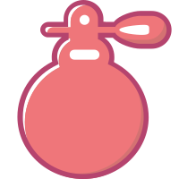

发现
我的
app下载
上传
主播后台
有声化
小雅音箱
未知歌曲
00:00
00:00
首页
>全部分类
热门分类
有声书
文学
言情
生活
悬疑
教科
都市
经典
幻想
童书
武侠
励志
历史
儿童书
儿童文学
科普百科
少儿音乐
少儿影视
学前英语
学科教育
少儿国学
儿童教育
健康
父母教育
少儿艺术
娱乐
音乐
流行
摇滚
民谣
轻音乐
古风
爵士
蓝调
乡村
古典
嘻哈
电音
后摇
新世纪
声乐
拉丁
金属
独立
儿歌
相声评书
相声
评书
小品
古曲
情感生活
故事
美文
爱情
女性
恋爱
夜话
心理
感情
婚姻
时光
星座
日记
美文故事
犀利
文章
情感教学
原创
非原创
娱乐
搞笑
吐槽
内涵
恶搞
热辣
灵异
直性情
正能量
影视
原声
评论
配置
音乐
明星
知识
历史
正史
野史
战争
名人
纪实
传记
故事
名师
商业财经
商界
理财
船票
投资
创业
消费
经管
基金
房产
期货
宏观
贵金属
信用卡
信托
外汇
保险
信贷
互联网金融
风险投资
债券
黄金
人文
国学
佛学
文学
名著
纪实
诗歌
艺术
风俗
哲学
心灵
文化
神话
伦理
传记
收藏
教育培训
创业
法律
管理
营销
求职
沟通表达
职场
心理
职业技能
考试培训
新媒体
名人语录
家庭教育
互联网
生活百科
语言
人力资源
历史
人文
励志
国学
哲学
IT科技
科技
互联网
创业
极客
评测
数码
程序员
产品经理
移动互联网
大数据
新媒体
智能
大公司
智能软件
探秘
外语
英语
日语
韩语
法语
泰语
德语
俄语
西班牙语
意大利语
葡萄牙语
其他语言
生活
旅游
故事
情感
历史
文化
地理
户外
音乐
名师
健康养生
中医
催眠
两性健康
健康常识
营养
疾病预防
心理
艾灸
针灸
偏方
黄帝内经

时尚生活
美食
生活家
家居
美容
减肥塑形
达人
运动
时尚
萌宠
摄影
珠宝腕表
茶酒
芳疗
头条
社会
民生
国内
国际
财经
娱乐
文化
体育
科技
军事
听两会
二次元
游戏
音乐
广播剧
实况解说
有声小说
美女主播
陪睡
动漫
同人
生活娱乐
古风
鬼畜
有声动漫
游戏故事
游戏攻略
解说
杂谈
大角虫
文艺
戏曲
京剧
黄梅戏
越剧
昆曲
地方戏
豫剧
秦腔
评剧
粤剧
沪剧
二人转
河南坠子
评弹
晋剧
蒲剧
吕剧
滑稽戏
特色
广播剧
都市
校园
科幻
玄幻
惊悚
悬疑
喜剧
江湖
穿越
福利
宫廷
电台
综合台
音乐台
文艺台
经济台
校园台
交通台
新闻台
故事台
都市台
汽车
购车
用车
说车
评测
维修改装
车闻趣事
品牌历史
摩托车